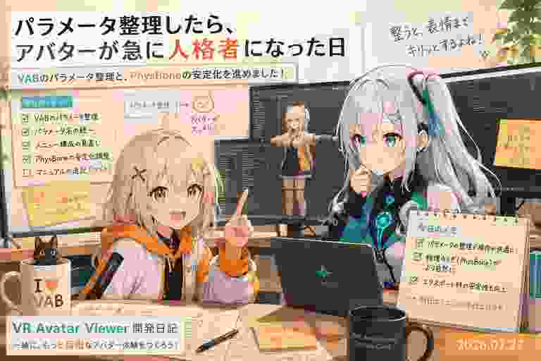

固定した揺れモノも、アニメーションに覚えてほしい日
今日は、髪やスカートなどの「揺れる部分」を手で固定した状態まで、アニメーションの一部として記録・再生する仕組みを進めています。

今日の開発は「まだコミット前」
日本時間の午前0時以降には、まだ新しいコミットはありません。現在の最新HEADは、昨日の「VRC瞬きBlendShapeの優先判定を修正」です。
その代わり、作業ツリーにはかなり大きな変更が残っています。今日の主役は、アニメーション編集と揺れモノ固定の連携です。
髪を固定したら、その状態も覚えてほしい
VRでは、髪や服、アクセサリーなどの揺れる部分を手でつかんで、その場に固定できる機能があります。問題は、その状態でアニメーションを作ったときです。
ろひ「ここを固定して、このポーズを記録」
ルミナ「記録しました！」
ろひ「再生」
髪「固定？ 知らない子ですね」
ろひ「そこも覚えてくれ」
そこで、通常のアニメーションデータだけでは表現できない「どの揺れモノを、どこに固定したか」を別の補助トラックとして保存・再生する仕組みを追加しています。開発内では VAC Physics Assist と呼んでいます。
アバターごとに違う揺れモノを、どう見つけ直すか
アバターによって髪や服の構造は違います。同じ名前の部品が複数あることもあります。そのため、単純に「髪の3番目」と覚えるだけでは、読み込み直したときに別の部品を指す可能性があります。
今回の実装では、揺れモノの物理システムそのものへ識別情報を付け、さらにその中のどの点を固定したかを組み合わせて、安定して同じ対象を探し直せるようにしています。
再生専用の仕組みも追加
通常のアニメーション再生だけでは固定状態を扱えないため、補助トラック専用の再生コンポーネントも新しく追加されています。再生中に対象の揺れモノを見つけ、記録された位置へ固定を適用します。
つまり、体の動きは通常のアニメーション、髪や服の固定は補助トラック、と役割を分けて再現する構成です。
ビルド版へライブラリを持っていく仕組みも整備中
もうひとつ、アプリ本体と一緒に配布するVAB・VAC・VBG用の管理ライブラリを、ビルド後のアプリフォルダへ自動コピーする処理も追加されています。
開発PCでは見えていたファイルが、配布版では見つからない――という事故を避けるための裏方作業です。ユーザーから見ると何も起きていないように見えますが、こういう処理ほど公開版では重要だったりします。
今日のまとめ
- 揺れモノ固定状態をアニメーションと一緒に扱う補助トラックを実装中
- アバターごとに異なる物理システムを安定して再識別する仕組みを追加
- 補助トラック専用の再生処理を追加
- VRの揺れモノ固定操作とVAC編集の連携を拡張
- 配布版へManagedLibraryを自動同梱するビルド処理を追加
本日のひとこと
ポーズだけ覚える時代は終わった。髪を押さえていた場所まで覚えてもらう。
今日はまだコミット前。だからこそ、いままさに組み上がっている途中の機能を記録する一日になりました。